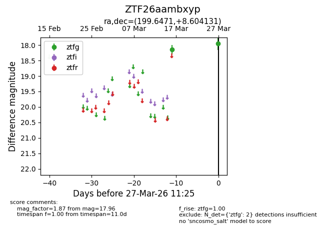
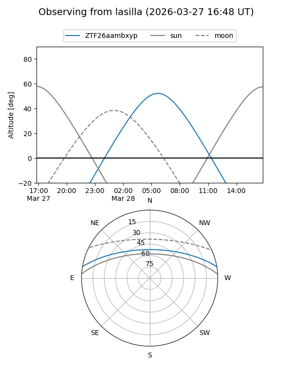
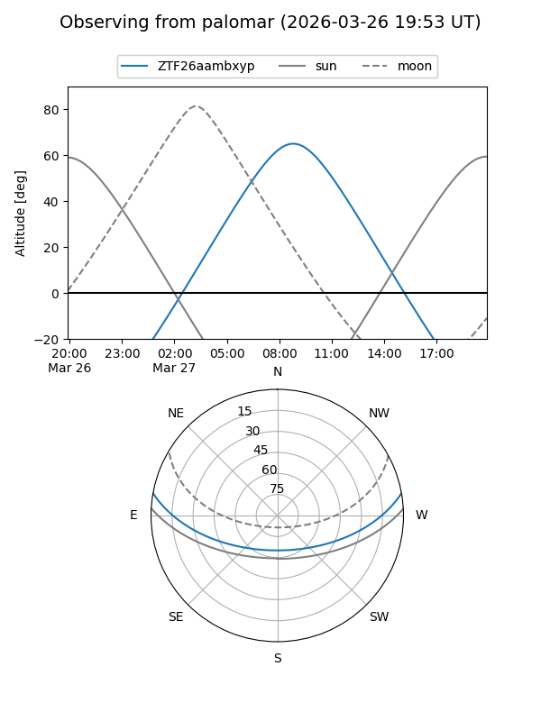

ZTF26aambxyp
Target ZTF26aambxyp at 2026-03-27 11:28
Aliases and brokers:
FINK: link
Lasair: link
ALeRCE: link
alt names
ZTF26aambxyp (ztf,fink_ztf)
Coordinates:
equatorial (ra, dec) = 199.6471,+8.60413
equatorial (HMS+DMS) = 13:18:35.31,+08:36:14.87
galactic (l, b) = (323.3131,+70.39399)
Flags:
Photometry:
last ztfg=17.96
2 ztfg detections
Lightcurve

Visibility


Additional plots